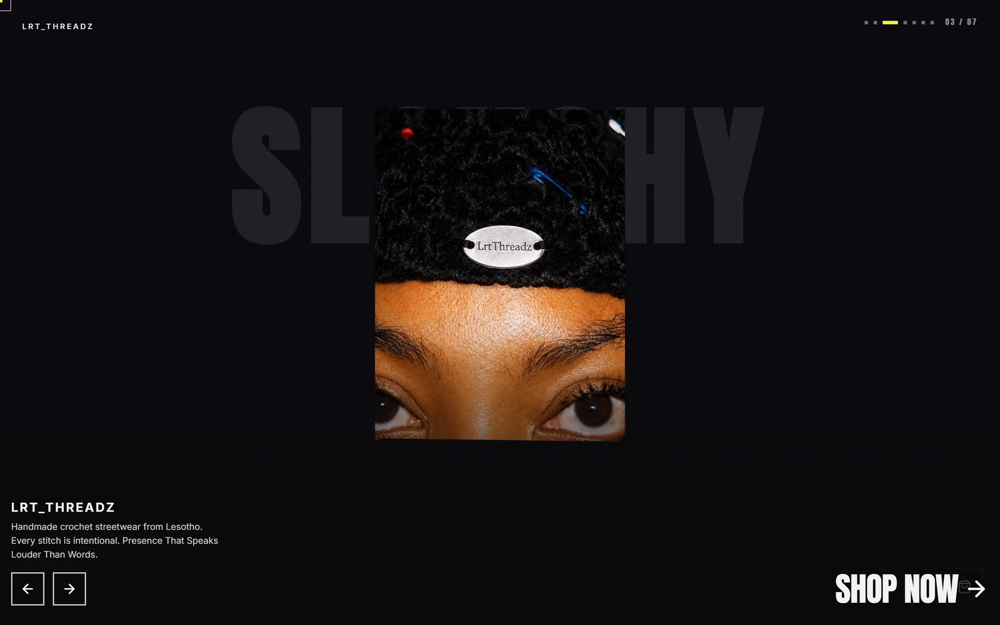
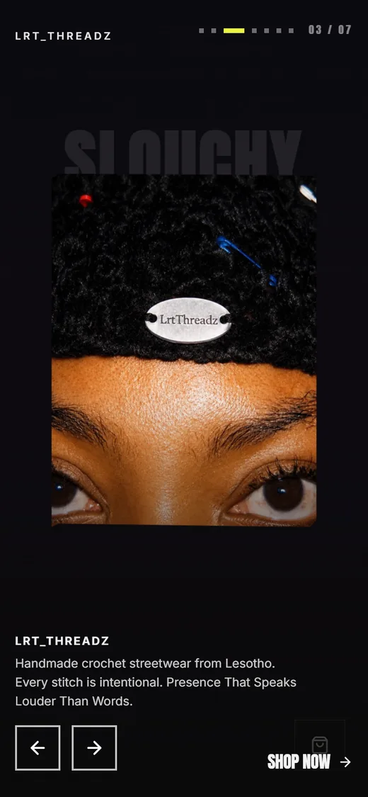

CedarStone Digital (Pty) Ltd · Johannesburg · Proof sheet · 5 frames · 4 exposed
Everything we have built is on this page.
Two online shops for two Lesotho clothing labels. Both are live. Both are below, at the size we built them.

03
04Frame 05 / 04 · 2026
Sesotho Fashioneng
The SS26 collection site for a fashion label out of Lesotho. Live at sesothofashioneng.co.za.
Fifteen pieces. Every price is looked up on our server when you check out, so a tampered request cannot buy a R2,200 hoodie for one rand.
M-Pesa at checkout as well as card, because a lot of this label's customers pay by phone.
The whole page is written into the HTML before any JavaScript runs. Over five thousand characters of readable text sit in the source itself. Google reads it, and so does a phone on a bad signal.
Frame 08 / 09 · 2026
LRT Threadz
An online shop for handmade crochet streetwear from Lesotho. Live at lrtthreadz.com.
Twenty-seven pieces, priced on the server, so the amount charged is never the amount the browser sent.
Checkout offers 2,353 PUDO locker pickup points across nine provinces, searchable by name or town. The whole list ships inside the page, so the picker answers instantly.
The front page opens on a seven-slide carousel. Arrows, swipe and autoplay, built from scratch.
The next frame is open.
Same size as the two above it. We have not built it yet.
Our terms, unchanged since May 2026
Read the contract before you phone us.
Most agencies promise in marketing copy and qualify in the contract. Ours is one click away and these four clauses are in it word for word.
- Fifty percent before we start, fifty percent on delivery, before files or credentials change hands.
- If the finished work does not match the agreed scope, we rebuild it at no cost.
- The intellectual property in everything we make transfers to you in full on final payment.
- Prices are in rand and exclude VAT unless the proposal says otherwise.
Three numbers, no discovery call needed to hear them.
A single-page site starts at R3,500. A multi-page build starts at R6,000. The first call is free and takes about thirty minutes.
We will not quote the exact figure here, because we have not seen your business yet. We will quote it in writing before anyone pays anything.
Three people. Two clients. One phone number.
We are three people in Johannesburg. You talk to the ones who write the code, because there is nobody else to hand you to. That is the whole arrangement, and it is the reason we can show you our entire body of work on one screen.
Nobody has reviewed us.
Two clients, two live sites, and not one written review. We would rather tell you that than borrow somebody else's words. Work with us and you will be the first, and you can say whatever you like.
Phone it.
082 061 3598WhatsApp · cedarstonedigital77@gmail.com
There is no form on this page. A form is a way of not giving you a number.